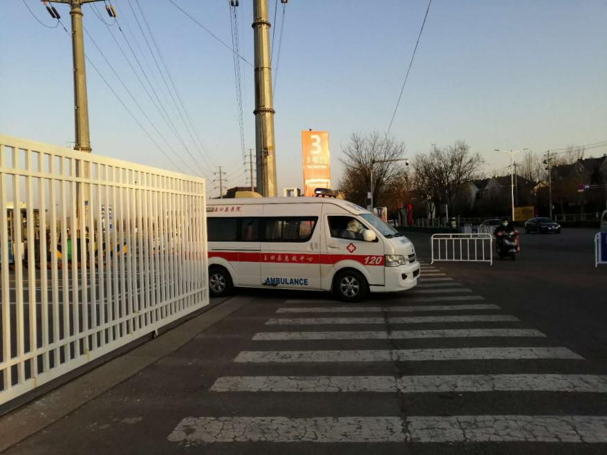
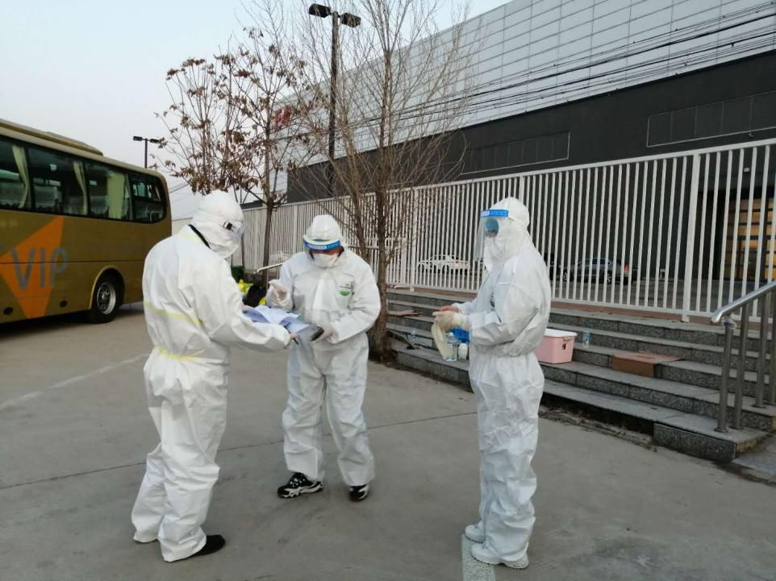

从英国抢票回国有多难？
原文链接 备份链接 欧洲疫情不断扩散，英国确诊病例迅速增加，由于部分航班取消，在英留学生想马上回国并不容易 文丨《财经》记者 陈亮 王静仪 编辑丨施智梁 英国疫情蔓延近日明显加速。截至3月15日，英国新冠肺炎确诊病例数已达1372例，与前 …

随着国内疫情逐渐得到控制，防止境外疫情输入成为现阶段防疫重点。从过海关到进入北京地区，如何筛查入境旅客？
文 | 《财经》记者 姚佳莹 陈亮
编辑 | 朱弢 施智梁
相较于以往满列航班信息的显示屏，3月17日下午两点后，首都国际机场T3航站楼的国际/港澳台到达航班信息只有往常的一半，共有13趟航班计划于当日到达。其中四趟航班来自港澳台地区，2趟来自韩国首尔，当日已无来自欧洲和美国的航班信息。

（首都机场T3-B区，图/《财经》记者姚佳莹）
首都机场T3航站楼划分为ABCD四个区，自3月10日起，D区被单独划为处置专区，集中接受来自疫情严重的国家和地区的航班。3月15日，处置专区停靠航班范围扩大，全部国际/港澳台地区进港航班均需停靠于此。
停靠航班数量的增加带来了旅客骤增。
3月17日下午，北京市新冠肺炎防疫工作新闻发布会上，北京首都国际机场股份有限公司副总经理赵莹对D区旅客无序聚集的情况作出回应。
赵莹表示，在3月15日之前，首都机场的T3-D处置专区每天接纳的航班大约为10余架次，旅客在2000人次左右，而在15日调整后，首日处置专区共运送旅客7252人次，与调整之前相比增长了220%。
随着国内疫情逐渐得到控制，防止境外疫情输入成为现阶段防疫重点。17日12时至24时，北京新增2例境外输入病例，分别来自西班牙和英国。截至记者发稿时，北京境外输入病例累计为43例，现有确诊39例。
那么，作为北京防止境外疫情输入的最前线，入境旅客从过海关到进入北京地区，要经历什么样的防控程序？北京目前境外疫情输入防控局势如何？
机场无缝闭环筛查
《财经》记者17日在现场看到，T3-D区已呈封闭状态。“除了单辟唯一通道运送旅客出站外，已禁止进入。”首都机场工作人员向《财经》记者表示。
飞友科技数据显示，从3月9日到3月16日，共计248架次国际航班抵达首都机场。以平均每架次200名旅客计算，在这8天内，有将近5万名境外人员经首都机场进入中国。
王慧（化名）来自沈阳，从英国探望女儿后回国的她，辗转约40小时到达北京新国展时已将近3月17日晚7点。
“飞机落地停稳后，我们不能立刻下机，在飞机上等了两个多小时。要先填入境健康申明卡申报健康信息，在空乘人员确保所有旅客均填写信息并核对后，才放我们进入卫生检疫通道，进行落地后的第一次体温测量，我们在飞行中已测了两次体温。”王慧告诉《财经》记者。
从登机到下机，机组检测是防疫的第一线。根据民航局发布的第三版《运输航空公司、机场疫情防控技术指南》，根据航班始发地疫情、客座率、航班运行特点等信息，将综合评估航班运行风险，共分为高、中、低三个等级，分别采取不同的防控措施。
对于低风险航班，主要是保障人流物流畅通，根据需要进行体温检测，机组佩戴一次性医用口罩；对于中风险航班，增加了客舱布局设计、减少人员流动等措施，在航行中对旅客进行体温检测；对于高风险航班，机上服务流程将减少，并分区管理旅客，分散就坐，同时在每个航班的后三排预留应急事件处理隔离区。
国航方面回复《财经》记者称，3月1日至3月15日滚动统计显示，“境外进京”航班在登机前因体温超标暂不运输旅客76人，共涉及23个航班，飞行途中检测体温超标落地移交检疫67人，涉及44个航班。
第二道防线是海关检查。“海关工作人员详细询问了始发地、航班号、座位号、境外呆了几天、抵京前是否中转、到北京后是否还需转机等信息，然后才放行过关。提取行李时，行李都已经消毒，”王慧告诉《财经》记者，“必须一关一关地通关，全程都在机场警察和海关人员的管控之下”。
与机场检测形成闭环的还有新国展的第二轮检测和分流。“所有入境人员都在唯一的出口等候转运车辆，接我们到新国展进行第二轮体温筛查。”王慧说。
还需进行第二轮检测
新国展距离首都机场T3航站楼不到6公里，占地约10.7万平方米，这个以往作为商业展示的区域，如今成了境外人员出机场后，进行第二次隔离检查的唯一地点。
“体温检查、登记信息，前后我花了近8个小时，有的人甚至更久。”王慧说。

（新国展E3门，图/《财经》记者姚佳莹）
在新国展唯一的入口E3门处，来自各省市的接驳车进出频繁。“我们就是中转站，主要负责接转境外中转北京，再到沈阳的旅客。境外旅客在新国展进行第二次检测后，体温正常的人员，由新国展工作人员登记分流到各省驻京办，再分到各市驻京办，由各市驻京办根据旅客行程，负责酒店往返、机场和火车站的接送，”沈阳市驻京办工作人员告诉《财经》记者，“北京市分配给沈阳入境人员的酒店有两家”。

（北京驰援大连接驳车，图/《财经》记者姚佳莹）
在新国展E5停车场，记者注意到，不少省市驻京办安排了接驳车辆接转境外人员，此外，北京市还增派车辆驰援。一名来自北京的司机主要驰援大连，“除了大连的专车大巴，我们这两天也刚刚加入接转”。
与其他省市主要使用公务用车不同，河北沧州市动用了120等医疗救护车辆加入接转，每辆车配备一名医务人员。“体温异常的将被送往地坛医院做核酸检测，正常的我们就直接接回沧州，同一飞机的旅客同一趟车。到达沧州后，在指定隔离点隔离14天，由政府全额出资。”一名医务人员告诉《财经》记者。

（省市驻京办人员登记、核查旅客信息，图/《财经》记者姚佳莹）
自2月29日起，北京地坛医院开始接收机场转送的筛查人员，截至3月17日8时，由首都机场送至北京地坛医院需进行境外输入人员筛查的共计1601例。3 月 15 日，地坛医院副院长吴国安曾表示，由于接诊压力巨大，地坛医院几天内紧急增加 10 位医生，22 位护士和15位警察，新开疑似病房为患者提供单间隔离。
3月17日有网传消息称，自3月18日始，所有进京的国际航班将转飞国内其他机场，北京不再接受国际航班。北京入境航班先分流到天津，石家庄，太原，呼和浩特等机场，在当地做疫情筛查，有症状的就地治疗，没症状的再转飞北京。《财经》记者就此信息向民航局求证，至发稿前，对方未予置评，有业内人士透露，该方案尚未得到审批。
截至3月18日11时的首都机场信息显示，仍有来自美国、英国、西班牙、韩国、日本等国家的航班入港，大部分的国际航班信息均显示正常状态。
为分担境外人员筛查压力，北京已于16日重启小汤山医院，主要用于境外来（返）京人员中需筛查人员、疑似病例及轻型、普通型确诊患者治疗。目前，北京小汤山医院设床位1000余张，将对确诊病例或疑似病例收进医院进行治疗，对筛查后未发现异常的旅客将由目的地省份以安全适宜方式接运回本地。
(《财经》记者王静仪对本文亦有贡献）

▲点击图片查看更多疫情报道
责编 | 阮璐阳 luyangruan@caijing.com.cn
本文为《财经》杂志原创文章，未经授权不得转载或建立镜像。如需转载，请在文末留言申请并获取授权。
原文链接 备份链接 欧洲疫情不断扩散，英国确诊病例迅速增加，由于部分航班取消，在英留学生想马上回国并不容易 文丨《财经》记者 陈亮 王静仪 编辑丨施智梁 英国疫情蔓延近日明显加速。截至3月15日，英国新冠肺炎确诊病例数已达1372例，与前 …
原文链接 备份链接 疫情影响下航空客流大幅下滑 航空公司面临较大经营压力 随着疫情在多国蔓延，全球对航空旅行的需求急剧下降，这使很多本就苦苦挣扎的航空公司陷入困境。 3月5日，英国航空公司Flybe宣布破产，成为第一家被疫情拖垮的航 …
原文链接 备份链接 《小酒馆》，是燃财经旗下的故事栏目，真人真事，讲述创新经济时代的人生百态。本文为第35期。 作者 | 金玙璠 孟亚娜 陈琪 编辑 | 魏佳 “新冠疫情，中国打上半场，世界打下半场，华人留学生打全场”。这虽然是一句调侃， …
原文链接 备份链接 【财新网】（记者 赵宁 杜偲偲）据北京卫健委最新通报，3月18日0时至12时，北京新增报告境外输入确诊病例11例，其中西班牙5例、英国4例、巴西1例、卢森堡1例。截至3月18日12时，累计报告境外输入确诊病例54例。 …
原文链接 备份链接 图片来源：央视新闻 记者：邓煜洲 牟缇缇 本文来源：央视新闻 “ 为做好境外输入人员疫情防控工作，尽力保证市民正常工作生活秩序，北京市疫情防控领导小组决定，3月16日起，启用北京小汤山医院，主要用于境外来（返）京人员中 …